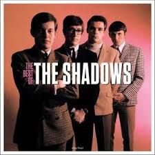
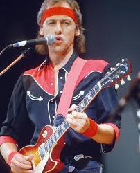
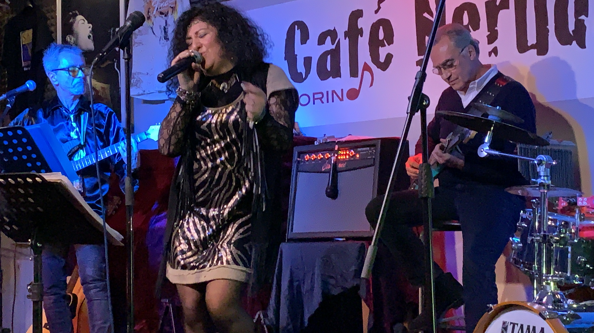
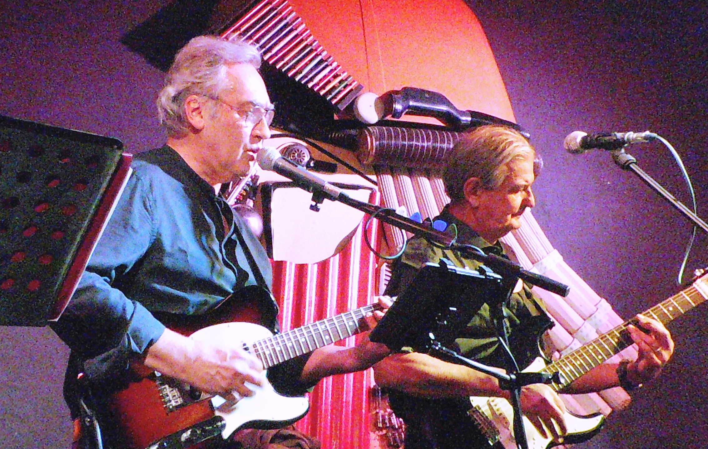

Sezioni
Cosa trovi qui
Questo sito racconta la musica di Gianfranco e dei suoi amici — dai tributi alle grandi band storiche, alle collaborazioni, fino alle storie delle band costruite nel tempo.

The
Shadows
Un omaggio alla leggendaria band britannica che ha rivoluzionato la chitarra elettrica. Versioni fedeli e sentite delle loro hit senza tempo.
Guarda i video 01
Tributi
Vari
Omaggi a grandi artisti italiani e internazionali — da Lucio Battisti a Lucio Dalla. Musica che attraversa generazioni e generi.
Guarda i video 02
Collaborazioni
Progetti nati dall'incontro tra musicisti diversi. La magia della musica suonata insieme, senza confini di genere o stile.
Guarda i video 03
La Storia
e le Band
La Quinta Strada, 3D Experience+, Four Fifties, DaDax — quattro band, quattro storie, una sola passione per la musica.
Scopri le band 04